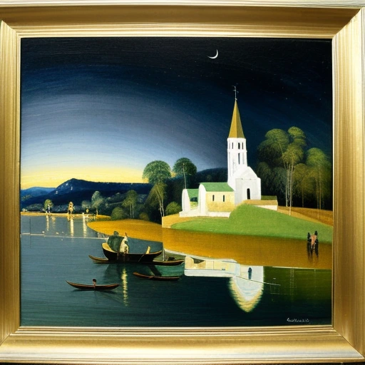
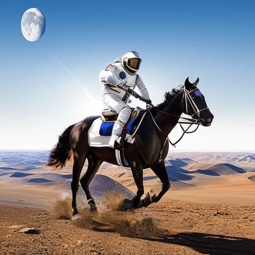
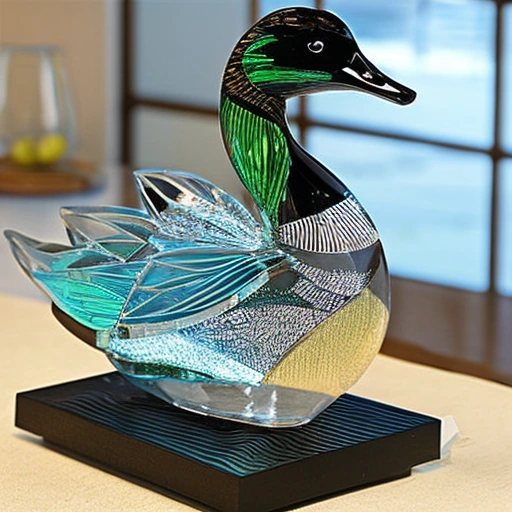

This paper presents DreamLLM, a learning framework that first achieves versatile Multimodal Large Language Models (LLMs) empowered with frequently overlooked synergy between multimodal comprehension and creation. DreamLLM operates on two fundamental principles. The first focuses on the generative modeling of both language and image posteriors by direct sampling in the raw multimodal space. This approach circumvents the limitations and information loss inherent to external feature extractors like CLIP, and a more thorough multimodal understanding is obtained. Second, DreamLLM fosters the generation of raw, interleaved documents, modeling both text and image contents, along with unstructured layouts. This allows DreamLLM to learn all conditional, marginal, and joint multimodal distributions effectively. As a result, DreamLLM is the first MLLM capable of generating free-form interleaved content. Comprehensive experiments highlight DreamLLM's superior performance as a zero-shot multimodal generalist, reaping from the enhanced learning synergy.
Oil-on-canvas painting of a blue night sky with roiling energy. A fuzzy and bright yellow crescent moon shining at the top. Below the exploding yellow stars and radiating swirls of blue, a distant village sits quietly on the right. Connecting earth and sky is a flame-like cypress tree with curling and swaying branches on the left. A church spire rises as a beacon over rolling blue hills.



@inproceedings{dong2024dreamllm,
author = {Dong, Runpei and Han, Chunrui and Peng, Yuang and Qi, Zekun and Ge, Zheng and Yang, Jinrong and Zhao, Liang and Sun, Jianjian and Zhou, Hongyu and Wei, Haoran and Kong, Xiangwen and Zhang, Xiangyu and Ma, Kaisheng and Yi, Li},
title = {Dream{LLM}: Synergistic Multimodal Comprehension and Creation},
booktitle = {The Twelfth International Conference on Learning Representations},
url = {https://openreview.net/forum?id=y01KGvd9Bw},
year = {2024},
}
{kind=link}